A jornada,
ponta a ponta.
ponta a ponta.
Treze telas na ordem em que um usuário novo encontra cada uma — da promessa ao feed. Android, rodadas 1 e 2. Impressão para análise.
ONBOARDING→
CONTA→
PERMISSÃO→
RELÓGIO→
AO VIVO→
A NOITE→
FEED·
GALERIA·
PERFIL
PROJETO TUMTUM · APP MVP
AGO 2026
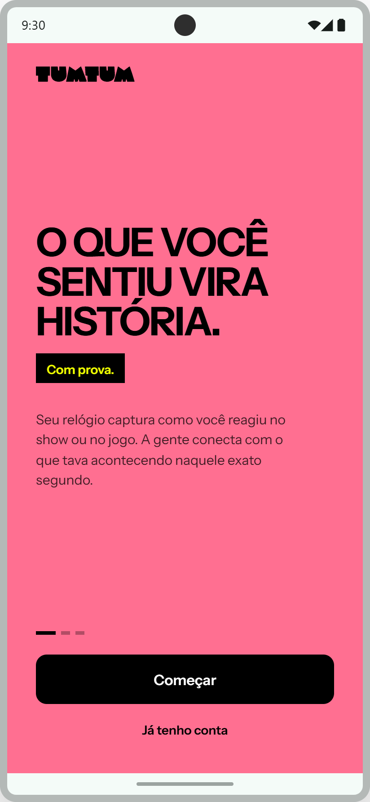
01
ENTRADA
Onboarding
—Rosa de tela cheia — a v0.4 na porta de entrada. A promessa em seis palavras, sem explicar BPM.
—"Já tenho conta" visível resolve o problema aberto do sign-in sem link na landing.
—Três dots: o carrossel segue com captura e prova, sempre uma ideia por tela.
B1 · RODADA 2

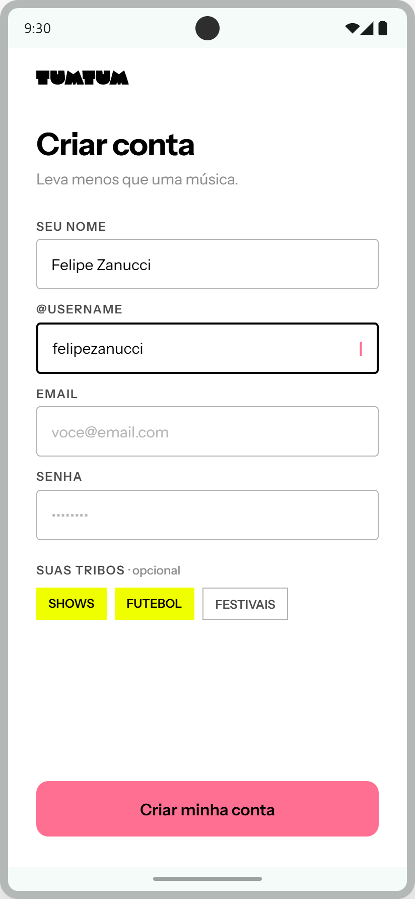
02
ENTRADA
Criar conta
—Username em destaque porque o perfil público (/[username]) já existe no produto.
—Tribos opcionais no cadastro — shows, futebol, festivais — alimentam feed e eventos sem formulário chato.
B2 · RODADA 2
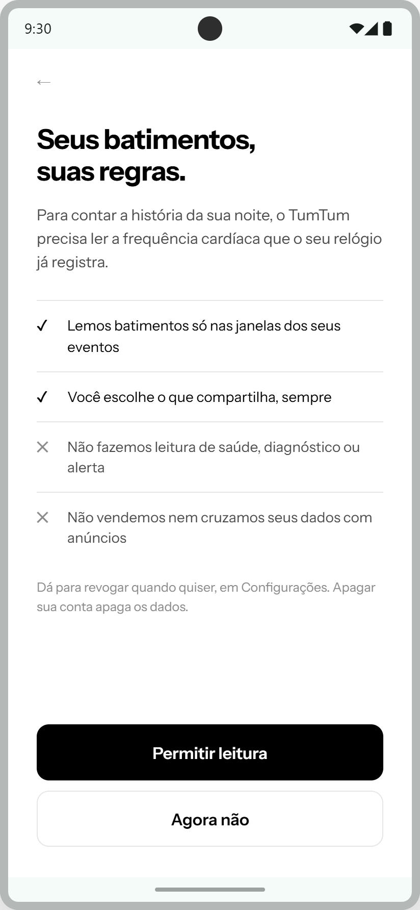
03
ENTRADA · A TELA QUIETA
Permissão de dados
—Personalidade desligada: botão preto (não rosa), zero piada, tom de contrato honesto.
—O que NÃO fazemos dito na frente: sem leitura de saúde, sem diagnóstico, sem venda de dados.
—"Agora não" tem o mesmo peso visual de um botão real — recusar não é punido.
B3 · RODADA 2
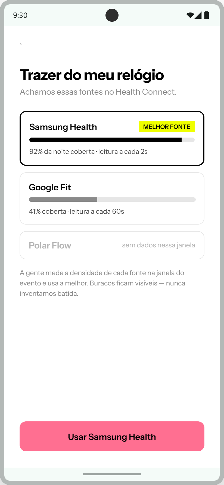
04
ENTRADA
Trazer do meu relógio
—Densidade medida por fonte na janela do evento — Samsung Health 92% vira MELHOR FONTE.
—A promessa do produto impressa na tela: buracos ficam visíveis, nunca inventamos batida.
B4 · RODADA 2
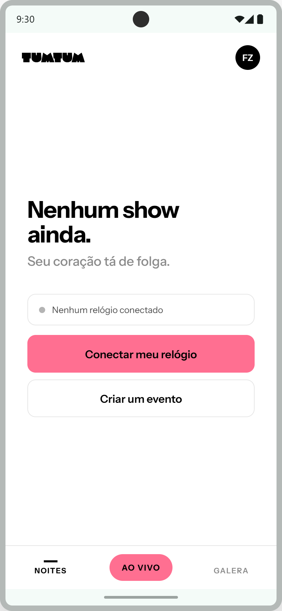
05
PRIMEIRO USO
Nenhum show ainda
—Copy aprovada do manual: "Nenhum show ainda. Seu coração tá de folga."
—O estado vazio já ensina os dois caminhos: conectar relógio e criar evento.
A5 · RODADA 1
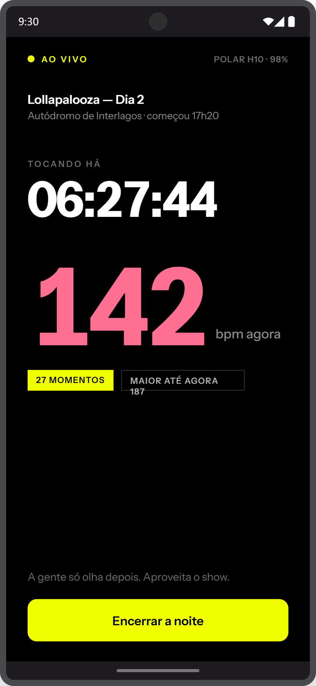
06
O LOOP · NO ESCURO
Captura ao vivo
—Preto funcional: é a tela acesa no meio da plateia. Número gigante, nada pra mexer.
—"A gente só olha depois. Aproveita o show." — o app manda a pessoa de volta pro evento.
A2 · RODADA 1
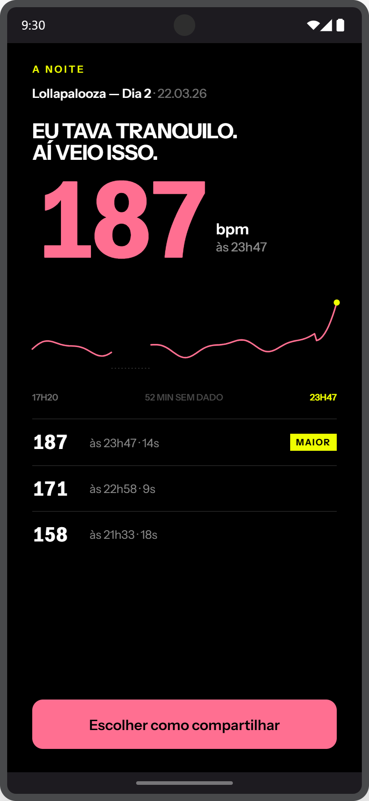
07
O LOOP · O PAYOFF
A noite — a revela
—187 rosa em escala de pôster; a curva é evidência, não estética — e o buraco de 52 min fica desenhado.
—Momentos sem nome já parecem terminados: "187 às 23h47 · 14s". O caso nomeado vem depois.
—CTA único: escolher como compartilhar. A revela existe pra virar card.
A3 · RODADA 1
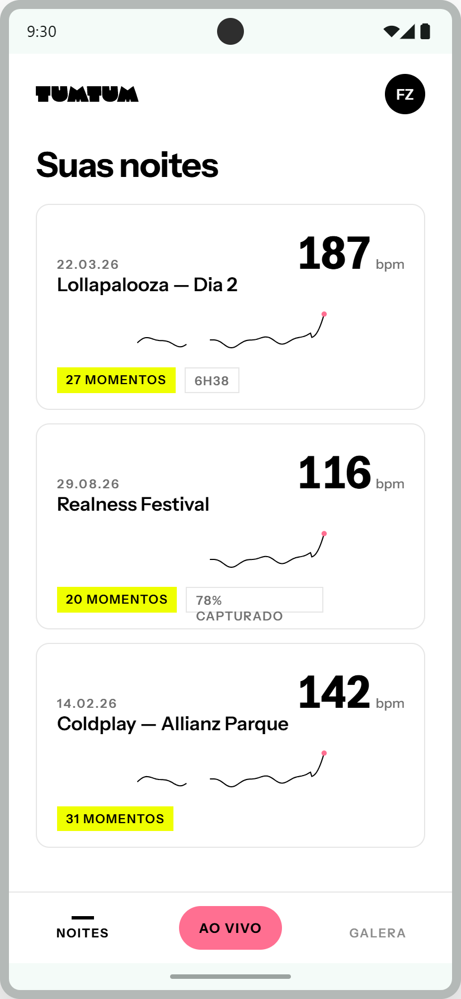
08
O LOOP
Suas noites
—Branco de dia: lista limpa, número preto — rosa nunca é texto fora do preto (2,65:1).
—Curva preta com marcador rosa; amarelo em fundo branco some (1,11:1), então vira chip com fundo.
A1 · RODADA 1

09
O SOCIAL
Feed — seus amigos
—A unidade do feed é o card compartilhado + uma frase — não existe post solto.
—Reação única: SENTI TB. Sem like genérico, sem comentário aberto no MVP.
—O banner amarelo puxa pro AO VIVO quando tem evento hoje — o feed alimenta o loop.
B5 · RODADA 2

10
O SOCIAL
Feed do evento
—Todo mundo que foi no mesmo show, num lugar só — 8.734 compartilharam a noite da Taylor.
—A estatística diz exatamente o que mede: "64% bateram o próprio pico na mesma música". Nunca ranking de BPM entre corpos.
B6 · RODADA 2
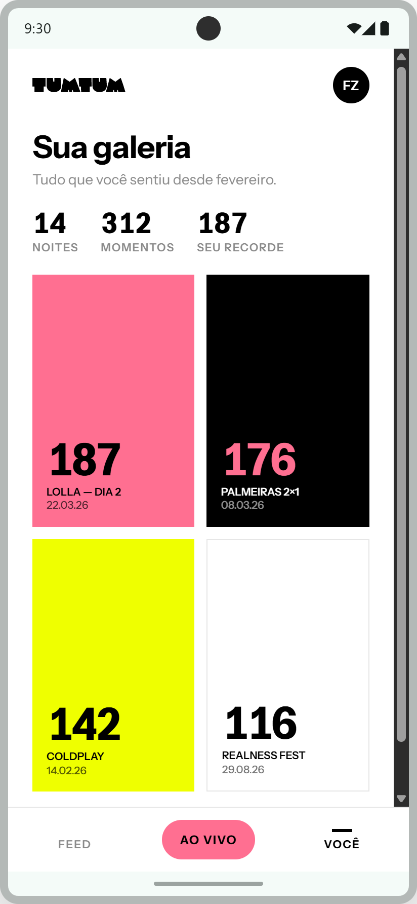
11
O SOCIAL · SUA HISTÓRIA
Sua galeria
—Tudo que você sentiu desde que entrou: 14 noites, 312 momentos, recorde 187.
—Mutante Pop funcionando: cada noite guarda a pele escolhida no card — rosa, preto, amarelo, branco.
B7 · RODADA 2
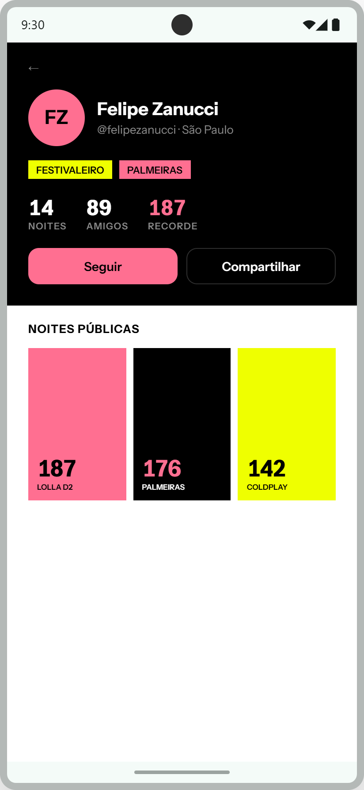
12
O SOCIAL
Perfil público
—Cabeçalho preto com tribos e recorde; grade de noites públicas embaixo.
—Só entra na grade o que a pessoa escolheu tornar público — o padrão é privado.
B8 · RODADA 2
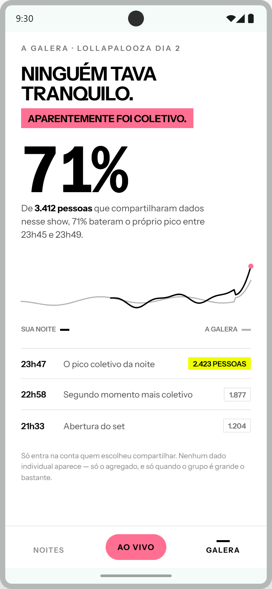
13
ANEXO · RODADA 1
A galera (versão r1)
—Versão da rodada 1, antes do social completo — na rodada 2 esse conteúdo vira o feed do evento.
—Mantida na análise para comparar: mesma honestidade estatística, sem a camada de posts.
A4 · RODADA 1